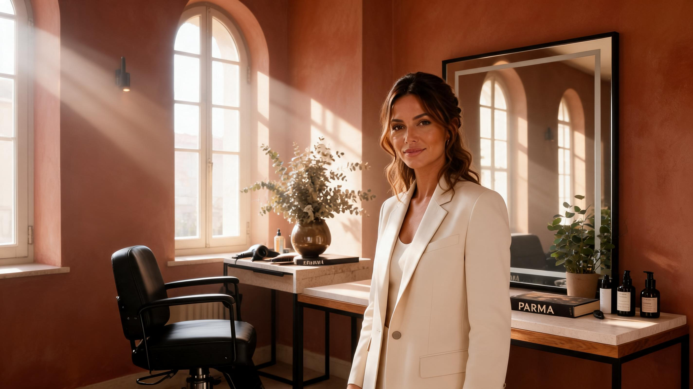

“Sono venuta da Milano solo per questo colore. Vale ogni chilometro.”

PRIVATE HAIR STUDIO · PARMA
Capelli, colore e stile personale in uno spazio intimo pensato per te.
Uno studio privato dove taglio, colore e consulenza personalizzata si incontrano in un’esperienza contemporanea, curata e profondamente personale.
L’ESSENZA
Nel cuore di Parma, un approccio ai capelli che unisce tecnica, ascolto e una bellezza che si sente davvero tua.

CHI SONO
Un solo posto, un approccio diretto, un obiettivo chiaro: capelli che ti somigliano davvero.
Sono Laura, hair stylist, e lavoro in modo personale, curato e contemporaneo. Ogni appuntamento nasce dall’ascolto, dalla consulenza e da una tecnica costruita sulla texture dei tuoi capelli, sul tuo stile e sul modo in cui vuoi sentirti.
Qui non trovi un salone impersonale. Trovi uno spazio intimo, una relazione diretta e un’esperienza one-to-one pensata per valorizzarti senza forzarti dentro un’immagine che non ti appartiene.
I SERVIZI
Servizi costruiti sulla tua texture, sul tuo tempo e sul risultato che vuoi vivere ogni giorno.

Signature Color
Colore personalizzato, tonalizzazione e styling finale per un risultato luminoso, sofisticato e facile da portare ogni giorno.
Taglio
Tagli costruiti sulla texture naturale dei capelli, sulla forma del viso e sul tuo modo reale di portarli.
Mantenimento & Gloss
Servizi pensati per ravvivare il colore, mantenere la brillantezza e prolungare nel tempo la qualità del risultato.
Consulenza Personalizzata
Uno spazio dedicato per capire cosa valorizza davvero i tuoi capelli e costruire insieme il percorso più adatto a te.
IL RISULTATO
Colore vissuto bene, luce naturale, movimento morbido. Il risultato deve restare bello anche fuori dallo studio.
L’obiettivo non è un effetto perfetto solo per una foto. È creare capelli che si muovono bene, riflettono la luce in modo naturale e continuano a somigliarti anche nella vita vera.

SERVIZI & PREZZI
Trasparenza, sensibilità estetica e servizi costruiti davvero su di te.
Ogni servizio viene personalizzato in base alla lunghezza, alla densità e alla storia dei capelli. Il prezzo finale viene sempre confermato dopo una consulenza personalizzata.
Signature Color
Trasformazioni complete con tonalizzazione e piega firmata.
Tagli
Tagli architetturali costruiti sulla texture naturale dei capelli.
Mantenimento
Gloss, ritocco radici e piega per mantenere il risultato impeccabile.
Specialty & Premium
Color correction, cheratina, extension e servizi ad alta complessità.
L’ATMOSFERA
Una luce calda, un ritmo più lento, uno spazio che ti fa sentire subito al posto giusto.
Lo studio è pensato per offrire attenzione, calma e una sensazione di presenza reale. Ogni dettaglio sostiene la stessa idea: farti sentire accolta, vista e a tuo agio.

FAQ
Domande frequenti, senza giri di parole.
Quanto dura un gloss?
In media tra 4 e 6 settimane, a seconda della base di partenza e della routine a casa.
Posso prenotare anche se voglio cambiare look in modo importante?
Sì. In questi casi iniziamo sempre da una consulenza, così capiamo insieme obiettivo, tempi e mantenimento.
Come capisco quale servizio fa per me?
Se hai un dubbio, scrivimi su WhatsApp: ti aiuto a orientarti tra taglio, colore, mantenimento e consulenza personalizzata.
PRENOTA
Trova il tuo posto. Il resto lo costruiamo insieme.
Se vuoi prenotare un servizio o iniziare da una consulenza, scrivimi direttamente su WhatsApp.